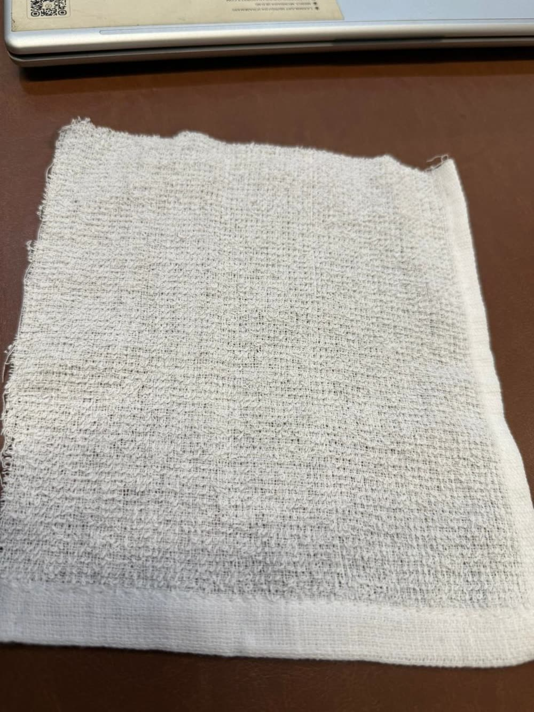
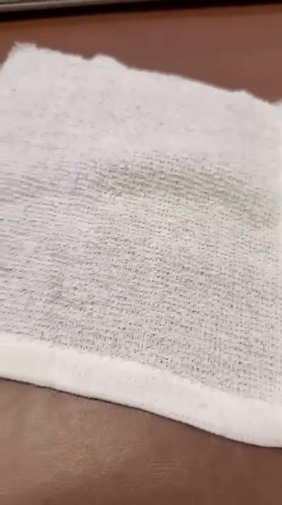
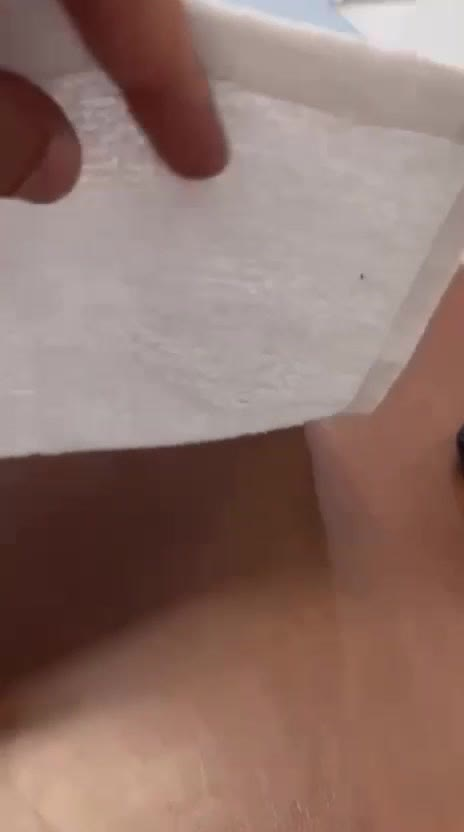
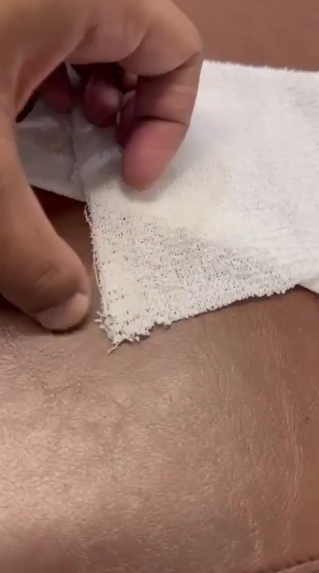
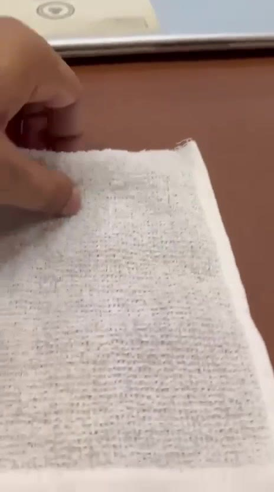

A lightweight, open-weave terry hot towel — the Japanese hospitality ritual, rebuilt for airline caterers, hotels, restaurants and spas. Woven in Vietnam, developed by Kiran Global Exports.

Oshibori — the hot towel offered on arrival in Japanese hospitality — is usually a dense, heavy terry. We're developing a version that runs against that instinct: an open, almost see-through ground carrying tall cotton loops, so it heats fast, cools fast, and dries faster than anything at standard hotel-towel density.
Kiran Global Exports is sourcing this construction from specialist oshibori weavers in Thai Binh and Nam Dinh, Vietnam. The samples travel first to the OEKO-TEX exhibition in Delhi, then into import orders for Indian and export markets — airlines, airline caterers, hotel groups, restaurants and spas.
A very light, semi see-through 100% cotton terry with tall loops on a low-density, gauze-like ground. One side is loop-dense, the other shows the open ground grid. A flat woven border is folded and stitched as the hem. Two reference qualities, tested on the finished fabric:
| Parameter | Quality A | Quality B |
|---|---|---|
| Composition | 100% Cotton | 73% Cotton / 27% Polyester |
| GSM (finished) | 195 g/m² | 185 g/m² |
| EPI, pile + ground | 61 (30+31) | 52 (26+26) |
| PPI | 38 | 33 |
| Pile warp | ~20s Ne | ~22s Ne |
| Ground warp | ~20s Ne | ~16s Ne |
| Pile ratio (ground:pile) | 1 : 2.86 | 1 : 3.28 |
| Pile height | 3.0 mm | 4.0 mm |




Most mass sits in the loops, not the ground — low density (52–61 EPI, 33–38 PPI) plus a high pile ratio (1:2.9–1:3.3) and tall loops (3–4mm), so it's light but still reads as a towel.
The open, breathable grid dries far faster than standard 350–500 GSM face towels — built for hot-then-cold cycling, not for soaking up a shower.
The technical challenge is running an open ground stably on the loom — loop stability, border shrinkage, low-density handling — which is exactly why it's being developed with specialist oshibori weavers rather than general towel mills.
Every factory under consideration must hold a current OEKO-TEX Standard 100 certificate for the fabric and finished product. GOTS and OCS organic certification are being requested where available, for buyers who need it.
Sample requests, factory quotes, or buyer enquiries for the airline hot towel program.